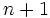
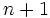

![[Main Page]](../../rsrc/bci2000logo.svg)
Core Modules
Technical Reference
Of the four BCI2000 modules, three make up the Core Modules: Data Acquisition, Signal Processing, and User Application. Between core modules, data flow in a closed loop, clocked by data acquisition hardware.
Signal Source Module
The role of the Signal Source module is to wait for data blocks coming in from the A/D hardware, and to send these blocks of data on to Signal Processing, thus acting as the on-line system's "metronome" synchronized to the A/D hardware clock. At the same time, it receives state vector information from the Application module, and saves this state vector information to a file in BCI2000 .dat format, together with the raw digitized data.
Data Acquisition and Storage Loop
During normal operation (Running is 1), the Signal Source module runs a data acquisition and storage loop that has the following structure:
1: While Running 2: Save state vector to file 3: Wait for A/D data 4: Send A/D data to Signal Processing 5: Wait for state vector from Application 6: Save A/D data to file
Real-Time Constraint
Note that statement 3 as well as statement 5 are blocking operations, i.e., the module will wait for A/D data as well as for the state vector data coming in from the Application module. This mode of operation imposes a real-time constraint on signal processing, and therefore requires a "sufficiently fast" system to work properly. For our purposes, a "sufficiently fast" system is a system where
- synchronous I/O operations (2, 4, 5, and 6) require an execution time that is small compared to the duration of a data block (as given by the sampling rate and the sample block size), and
- the time required by the Signal Processing and Application modules for processing the data sent out in statement 4 is small compared to the duration of a data block.
In an on-line system, the time between sampling of a data block, and display of the resulting feedback information to the subject, is critical. Given a "sufficiently fast" system as defined above, only statement 4 will enter into this critical time path, while the time spent on execution of the remaining statements will reduce the waiting interval occurring in statement 3.
State Vector Storage
For the data in the file, the state vector which results from processing a data block  is saved together with the following block, . For the first block, a state vector is saved that contains initial values.
Note that the SourceTime state is an exception insofar as it matches the acquisition time of the current block.
As a result, the StimulusTime state (and similar states) will always have a smaller value than the SourceTime state, and needs to be referenced to the SourceTime state of the previous block in order to obtain processing delay.
is saved together with the following block, . For the first block, a state vector is saved that contains initial values.
Note that the SourceTime state is an exception insofar as it matches the acquisition time of the current block.
As a result, the StimulusTime state (and similar states) will always have a smaller value than the SourceTime state, and needs to be referenced to the SourceTime state of the previous block in order to obtain processing delay.
Signal Processing Module
Signal Processing acts like a black box to the rest of the system - it receives brain signals from the Signal Source and sends control signals on to the Application.
The data flow in a typical implementation is as follows:
selected channels from data acquisition -> [Spatial Filter] -> spatially filtered signal -> [Temporal Filter] -> temporally filtered signal -> [Classifier] -> control signal -> [Normalizer] -> normalized control signal to go to application
There are basically 4 main filters (Spatial Filter, Temporal Filter, Classifier, and Normalizer) connected in form of a pipe: Each filter's output is the input to the next filter, and all filters act on each input block of data in sequence. For each input block of data, there must be a resulting output block.
Module Independence
One of the goals for BCI2000 is for each module to be as independent of the others as possible. For example, Signal Processing should not have to take the type of data collection hardware into account. For the same reason, Application should (ideally) not have to know about the signal processing method used. While in real-world situations this will not be possible, control signals shall be zero mean (to the extent that this is possible), shall be normalized to unit gain, and each value shall be equally accessible by the user's brain signals. In this fashion, the interdependence between Signal Processing and Application can be minimized.
Assumptions and Dependencies
BCI2000 core modules can contain instances of multiple filter classes. These filter classes cannot assume any specific values for system-wide parameters such as SampleBlockSize, SamplingRate, or TransmitCh. Rather, they have to be able to adapt their functionality according to these three parameters -- they might not only be used in scenarios with varying parameters, but they might also have to work together with other filters. Therefore, hard coded assumptions about system-wide parameters have to be avoided.
Application Module
One major goal for BCI2000 system design is the independence between modules. In most BCI systems, however, some parts of the applied signal processing module (i.e., the device-dependent part of signal processing) depend on the feedback to the user - a feature provided by the user application module. This inter-dependence between the signal processing and the user application modules poses severe problems to the system design, because it is not possible to completely encapsulate each module and separate it from others. In order to minimize inter-dependence, duties should be performed by the module that is conceptually defining the feature. For example, task paradigm and timing are, conceptually, parts of a task and should therefore be handled by the user application module. User Reference:CursorTask is an implementation of a such a user task - a simple cursor task - that complies with the idea of minimal inter-dependence.